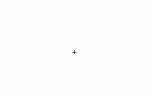

<!DOCTYPE html>
<html>
  <head>
    <title>Image Similarity Experiment</title>
    <script src="https://unpkg.com/jspsych@7.0.0"></script>
    <script src="https://unpkg.com/@jspsych/plugin-html-keyboard-response@1.0.0"></script>
    <script src="https://unpkg.com/@jspsych/plugin-html-button-response@1.0.0"></script>

    <script src="https://unpkg.com/@jspsych/plugin-image-keyboard-response@1.0.0"></script>
    <script src="https://unpkg.com/@jspsych/plugin-image-slider-response@1.0.0"></script>
    <script src="https://unpkg.com/@jspsych/plugin-image-button-response@1.0.0"></script>
    <script src="https://unpkg.com/@jspsych/plugin-preload@1.0.0"></script>
    <script src="https://unpkg.com/@jspsych/plugin-instructions@1.0.0"></script>
    <link href="https://unpkg.com/jspsych@7.0.0/css/jspsych.css" rel="stylesheet" type="text/css" />
    <link rel="stylesheet" href="exp_style.css">
    <script type="text/javascript" src="./socket.io/socket.io.js"></script>
    <script src="functions.js"></script>
    <script src="trial_info/trial_info.json"></script>
    <style>
    img{
        vertical-align: middle;
    }
    </style>

  </head>
  <body></body>
  <script>
    /* initialize jsPsych */
    var jsPsych = initJsPsych({
      on_finish: function() {
        console.log('Experiment complete!!!');
        //window.location = 'https://theuselessweb.com/'; // 'https://app.prolific.com/submissions/complete?cc=CK5XXXER'
        window.location = 'https://app.prolific.com/submissions/complete?cc=C10TIMLV';

        //jsPsych.data.displayData();
      }
    });
    var subject_id = jsPsych.data.getURLVariable('PROLIFIC_PID');
    var study_id = jsPsych.data.getURLVariable('STUDY_ID');
    var session_id = jsPsych.data.getURLVariable('SESSION_ID');
    var num_trials = 200;

    var all_trials = trial_info['trials'];
    var video_conditions = trial_info['video_conditions'];
    var object_conditions = trial_info['object_conditions'];
    var choice_idxs = trial_info['choice_idxs'];

    var my_object_condition = object_conditions[randint(len(object_conditions))];
    var my_video_condition = video_conditions[randint(len(video_conditions))];
    var trial_indices = trial_info[my_object_condition];
    var my_video = trial_info['videos'][my_video_condition][my_object_condition];


    console.log('Subject ID: ' + subject_id);
    console.log('Study ID: ' + study_id);
    console.log('Session ID: ' + session_id);
    jsPsych.data.addProperties({
      subject_id: subject_id,
      study_id: study_id,
      session_id: session_id,
      object_condition: my_object_condition,
      video_condition: my_video_condition,
      experiment_name: "spatiotemporal_learning"
    });

    /* create timeline */

    /* preload images */
    var preload = {
      type: jsPsychPreload,
      auto_preload: true,
      images: []
    };

    /* define instructions trial */
    var instructions = {
      type: jsPsychInstructions,
      pages: [
        // First page: Welcome!
        "<p style= 'font-size:200%' ><b>Welcome to our experiment!</b></br></p>" +
        "<p>This is a visual judgment experiment. Let's start off with some instructions. </p>",
        "<p style= 'font-size:300%'><b>Image similarity judgment</b></br></p>" +
        "<p>This experiment has two components: a studying phase and a testing phase. In the studying phase, you will be shown a video of an object - it is your task to study this object for as long as you need to fully learn it such that you could easily recognize it later on, even from a different angle. </p>" +
        "<p>Then when you are ready, you can proceed to the testing phase, wherein you will complete a series of match-to-sample trials. On each trial, you will first see an image flashed very briefly on the screen - we call this first image the 'sample image'. You will then be shown two images and asked to choose the one which contains the same object as the initially presented sample image. You will indicate your response by pressing either the left arrow key or the right arrow key. After you submit your answer, you will automatically move onto the next question. </p>",
        "<p>Below is an example video of a few trials. Each trial begins with a small cross in the middle of the screen, which tells you to get ready! Then the 'sample' image will be shown on the screen and will then quickly disappear, and you will then be shown two choices. You must press either the left arrow key or the right arrow key on your keyboard to indicate which of these two choices is an image of the same object as the sample image. Note that the correct choice may be from a different viewpoint so the object may not look exactly the same, but this is what makes the task challenging! You must identify the match even though it will be a rotated version of that object.</p>"+
        "<p>There is no time limit to respond; however, we encourage you to respond as quickly as possible while maintaining accurate responses. </p>" +
        "<p></p>",
        "<p>We will now begin the task! We expect this to take approximately 20 minutes. We have placed break points every 2-3 minutes to give you a chance to take a rest if needed before proceeding. <br> Please try to respond as quickly as possible but do not rush through the task. At the end, you will be rewarded for your effort and for your accurate performance.</p>" +
        "<p>Remember: your task is to observe closely the test image and then choose which of the two choices below looks most similar to the test image.</p>" +
        "<p>Press next to enter the studying phase of the task. Good luck! </p>",
        "<p style= 'font-size:300%'><b>Study this object closely. Take as long as you need.</b></br></p>" +
        "<p></p>",
        "<p>When you feel like you know this object well and would be able to recognize it easily later on, press next to begin the testing phase. </p>" +
      ],
      show_clickable_nav: true,
      post_trial_gap: 1000,
    };
   
    /* define trial stimuli array for timeline variables */
    var trials = [];
    var duration = 500; // ms
    var stimwidth = 400; // pix

    for (i = 0; i<num_trials; i++){
      idx = trial_indices[i];
      trial = all_trials[idx]
      trial_choice_idx = choice_idx[idx];

      trial_sample = trial[0];
      trial_choices = [trial[1], trials[2]];
      ordered_choices = []

      var fixation = {
        type: jsPsychHtmlKeyboardResponse,
        stimulus: '<div style="font-size:60px;">+</div>',
        choices: "NO_KEYS",
        trial_duration: 500,
        data: {
          task: 'fixation'
        }
      };

      var sample_trial = {
        type: jsPsychImageKeyboardResponse,
        stimulus: 'all_imgs/' + trial_sample + '.png',
        stimulus_width: stimwidth,
        trial_duration: duration,
        post_trial_gap: 1000,
      }

      let choiceL = trial_choices[trial_choice_idx[0]];
      let choiceR = trial_choices[trial_choice_idx[1]];
      preload.images.push(choice0, choice1);

      var choice_trial = {
        type: jsPsychHtmlKeyboardResponse,
        stimulus: ``,
        choices: ['ArrowLeft', 'ArrowRight'],
        prompt: "Press either the left or right arrow key to indicate which object is the same as the object that was briefly flashed.",
        data: {
          task: 'matchtosample',
          trial_id: idx,
          sample: trial_sample,
          choiceL: choiceL,
          choiceR: choiceR,
          trial_idx: trial_choice_idx,
          correct_choice: trial_choices[0],
          sample_duration: duration,
          image_size_px: stimwidth,
        },
        on_finish: function(data){
          if(data.response == 'arrowleft'){
            data.subject_choice_num = 0;
          } else if (data.response == 'arrowright') {
            data.subject_choice_num = 1;
          } else {
            data.subject_choice_num = -1;
          }
          choices = [data.choice1, data.choice2];

          data.subject_choice = choices[data.subject_choice_num];
          save_trial_to_database(data);
        }
      };

      trials.push(fixation, sample_trial, choice_trial);

      if (i>0 && i % 20 == 0){
        var trial_break = {
          type: jsPsychHtmlKeyboardResponse,
          stimulus: '<p></p>',
          prompt: Math.floor(i/20) + ' out of 5 trial blocks complete. Press any key to begin the next block of trials',
        };
        trials.push(trial_break);
      } 

    }
   
    var postexp_question = {
      type: jsPsychHtmlButtonResponse,
      stimulus: '<p>How difficult did you find this task?</p>',
      choices: ['Very easy', 'easy', 'moderate', 'hard', 'very hard'],
      data: {
        task: 'postquestion',
      },
      on_finish: function(data){
        save_trial_to_database(data)
      }
    }


    // define debrief
    var debrief_block = {
      type: jsPsychHtmlKeyboardResponse,
      stimulus: function() {

        var trials = jsPsych.data.get().filter({task: 'matchtosample'});
        var rt = Math.round(trials.select('rt').mean());

        return `<p>You have completed the experiment!</p>
          <p>Your average response time was ${rt}ms.</p>
          <p>Press any key to complete the experiment. Thank you!</p>`;
      }
    };

    // Add to timeline
    var timeline = [];
    timeline.push(preload);
    timeline.push(instructions);
    timeline.push(...trials);
    timeline.push(lastblock_instructions);
    timeline.push(...lastblock_trials);
    timeline.push(postexp_question);
    timeline.push(debrief_block);

    // start the experiment 
    jsPsych.run(timeline);

  </script>
</html>
